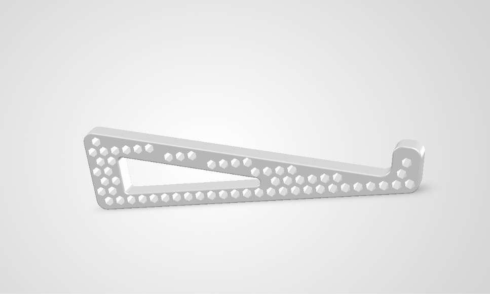

Planeación Avanzada de la Calidad • Manufactura Aditiva
Diseñado en SolidWorks con arquitectura hexagonal de flujo térmico. Impreso en polímero PETG de grado ingenieril para extender la vida útil de tu laptop y proteger tu postura.

Modelo CAD 3D renderizado en SolidWorks
Modular, ultraligero y diseñado con la altura ergonómica ideal para proteger tus muñecas al escribir.
Centro de gravedad validado mediante checklist QFD para laptops de 15" a 17" de hasta 3.5 kg de peso.
Espesor de pared estandarizado con chaflanes en nodos críticos, de 4 a 5 perímetros y 35% de relleno giroide.
Reducción promedio en los 5 riesgos principales del proceso, disminuyendo el NPR máximo de 240 a solo 36.
Desde la parametrización CAD hasta la inspección con plantillas Go/No-Go.
Ergonomía y carga 15.7"
Modelado en SolidWorks
Malla de alta resolución
Infill giroide al 35%
Boquilla 0.4 mm FDM
Perfil térmico maestro
Secado previo a 65 °C
Cama limpia con IPA 99%
Enfriamiento controlado
Limpieza con alicates
Gomas antiderrapantes
Inspección Go/No-Go
Analizamos las 12 operaciones del proceso para neutralizar modos de fallo críticos antes de producir cada soporte ErgoDesk.
| ID / Etapa | Modo Potencial de Fallo | Efecto Potencial | NPR Inicial | Acciones Implementadas | NPR Final | Reducción |
|---|---|---|---|---|---|---|
| OP-02Diseño 3D CAD | Espesor de pared insuficiente o esquinas vivas | Fractura estructural por concentración de esfuerzos | 240 (Crítico) | Simulación FEA estática para 5 kg (FS ≥ 2.0); espesor mín. ≥ 3.5 mm y chaflanes en nodos críticos. | 32 | 86.70% |
| OP-07Cargar PETG | Filamento degradado por absorción de humedad | Hilado excesivo (stringing), burbujas y pérdida de rigidez | 180 (Crítico) | Protocolo de secado obligatorio (65 °C por 5 h) y alimentación desde Dry Box (< 20% HR). | 36 | 80.00% |
| OP-04Generar G-code | Orientación incorrecta de piezas; infill bajo | Delaminación de capas bajo el peso del equipo | 160 (Crítico) | Perfil maestro bloqueado: mín. 4-5 perímetros, 35% infill giroide y capas a compresión. | 32 | 80.00% |
| OP-01Requisitos | Dimensiones o requisitos de carga incompletos | Soporte inestable; la laptop se desliza o vence el centro | 140 (Alto) | Checklist estandarizado (QFD y ergonomía) validando centro de gravedad para 15"-17" (hasta 3.5 kg). | 28 | 80.00% |
| OP-08Iniciar Impresión | Despegue de primera capa (warping) o Z-offset | Pérdida de planitud en la base o fallo catastrófico | 126 (Alto) | Desengrase obligatorio con alcohol isopropílico (IPA 99%) y mallado automático ABL pre-impresión. | 28 | 77.80% |
| Promedio Global Top 5 (Riesgo global reducido en 79.6%) | 169.2 | Controles preventivos y de detección activos | 31.2 | 81.50% | ||
Polímero térmico de alta resistencia mecánica y térmica para la estructura principal.
Gomas adhesivas de silicona para sujeción firme y protección del chasis de la laptop.
Desengrase profundo de la placa PEI para garantizar adhesión perfecta en la primera capa.
Control de humedad relativa (< 20% HR) durante toda la alimentación del filamento.
Boquilla 0.4 mm con cama caliente, modelado paramétrico CAD y simulación FEA.
Post-procesado de precisión y gauge dimensional para inspección de calidad final.
Para garantizar que el soporte ergonómico de ErgoDesk cumpla con los estándares de calidad de la industria y la metodología APQP, se identificaron puntos críticos de fallo con NPR elevado en el AMEF de proceso. Para neutralizar estos riesgos de manera proactiva, se implementaron dos mecanismos Poka-Yoke (a prueba de errores): uno orientado al control de materia prima y otro a la verificación dimensional final.
Modo de fallo que previene: Filamento degradado por absorción de humedad, lo que genera hilado excesivo (stringing), burbujas internas y pérdida crítica de rigidez estructural en el soporte.
Almacenamiento Activo: El polímero PETG de grado ingenieril se resguarda en una Dry Box equipada con sensor digital y perlas de sílica gel que aseguran una humedad relativa < 20% HR.
Interbloqueo Mecánico/Digital: Si el sensor detecta que la humedad interna excede el parámetro permitido, la compuerta impide la extracción y alimentación del filamento hacia la impresora FDM.
Modo de fallo que previene: Entrega de un soporte con desviaciones dimensionales o encogimiento térmico (warping), provocando inestabilidad o deslizamiento de la laptop (15.7") en su centro de gravedad.
Lado "Go" (Pasa): Calibrador físico fijo con tolerancias geométricas estrictas donde la pieza terminada debe deslizarse suavemente, comprobando el tamaño mínimo funcional.
Lado "No-Go" (No Pasa): Aberturas acotadas al límite máximo tolerable; si la pieza entra en este lado, sufrió deformación o sub-dimensionamiento y queda rechazada automáticamente.
| ID / Operación | Modo Potencial de Fallo | Dispositivo Poka-Yoke | Tipo de Poka-Yoke | NPR Inicial | Acción Correctiva / Mecanismo | NPR Final | % Reducción |
|---|---|---|---|---|---|---|---|
| OP-07Cargar Filamento PETG | Filamento degradado por absorción de humedad (hilado excesivo / burbujas / pérdida de rigidez) | Sistema de Interbloqueo por Control Higrométrico en Dry Box | Prevención / Control de Entrada | 180 (Crítico) | Bloqueo mecánico/digital de alimentación si la humedad relativa supera el 20% HR. | 36 | 80.00% |
| OP-12Verificación y Prueba | Desviación dimensional o deformación por encogimiento térmico (warping) | Calibre de Tolerancia Límite (Plantilla Go / No-Go) | Detección / Inspección 100% | 140 (Alto) | Plantilla física con ranuras límite; si la pieza no entra en "Go" o pasa en "No-Go", se descarta automáticamente. | 28 | 80.00% |
Incluye explícitamente el Filamento PETG, las Almohadillas Antiderrapantes, el Alcohol Isopropílico (99%), la Sílica Gel en Dry Box y la Plantilla Go/No-Go.
Refleja claramente la secuencia completa de manufactura aditiva, destacando los puntos de control críticos en la OP-07 (Dry Box) y la OP-12 (Plantilla Go/No-Go).
Respalda los datos con las métricas de reducción de riesgo global, demostrando una mitigación eficiente de los NPRs críticos iniciales hacia valores seguros por debajo de 40.